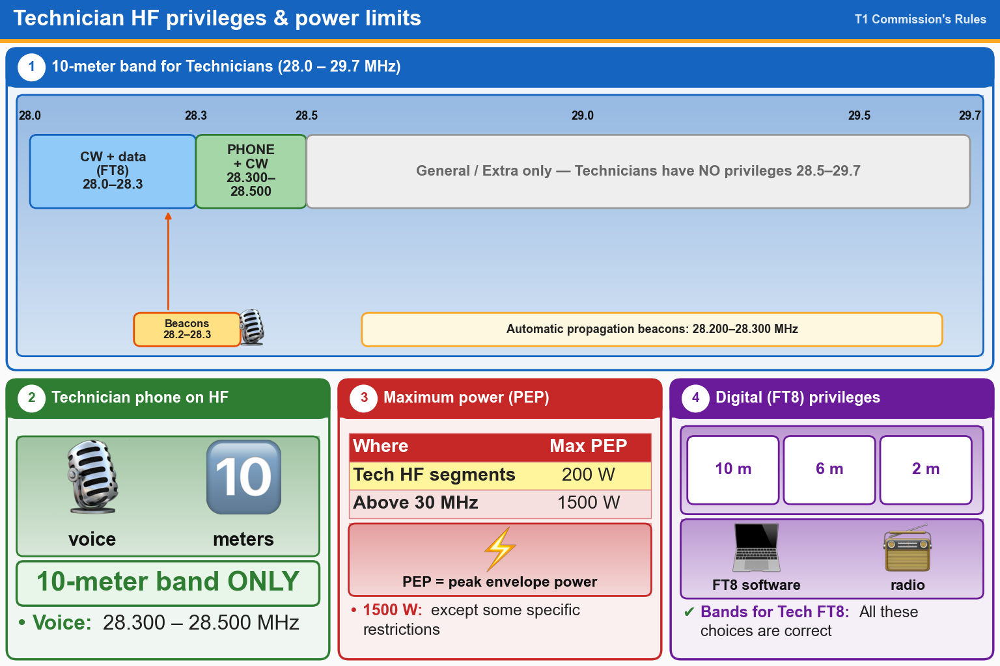

💡 Tech voice on HF = 28.300–28.500 MHz only, 200 W PEP. Above 30 MHz: up to 1500 W.
Press Check on any question to see if you're right (it won't show the answer), or Grade at the bottom to grade the whole page.
T1B01[97.301(e)]
Which of the following frequency ranges are available for phone operation by Technician licensees?
✘A.28.100 MHz to 28.300 MHz
✘B.28.050 MHz to 28.150 MHz
✔C.28.300 MHz to 28.500 MHz
✘D.28.500 MHz to 28.600 MHz
T1B06[97.301(e), 97.305]
On which HF bands does a Technician class operator have phone privileges?
✘A.30-meter band only
✔B.10-meter band only
✘C.None
✘D.80-meter, 40-meter, 15-meter, and 10-meter bands
T1B11[97.313]
What is the maximum peak envelope power output for Technician class operators in their HF band segments?
✔A.200 watts
✘B.10 watts
✘C.50 watts
✘D.100 watts
T1A06[97.203(d)]
On which of the following HF frequencies can automatically controlled amateur propagation beacons be found?
✘A.Anywhere, if they are registered with the FCC
✔B.On ten meters, between 28.200 MHz and 28.300 MHz
✘C.Anywhere in the Technician portion of 10 meters
✘D.In a specific portion of each of the HF Technician bands
T1B12[97.313(b)]
Except for some specific restrictions, what is the maximum peak envelope power output for Technician class operators using frequencies above 30 MHz?
✔A.1500 watts
✘B.100 watts
✘C.500 watts
✘D.50 watts
T1B05[97.301, 97.305]
Which of the following bands include frequencies where Technicians are authorized to use digital modes such as FT8?
✘A.6 meters
✘B.2 meters
✘C.10 meters
✔D.All these choices are correct